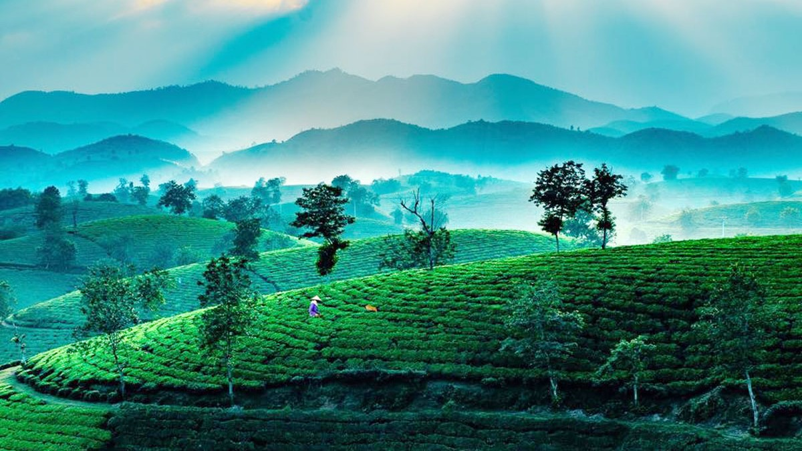
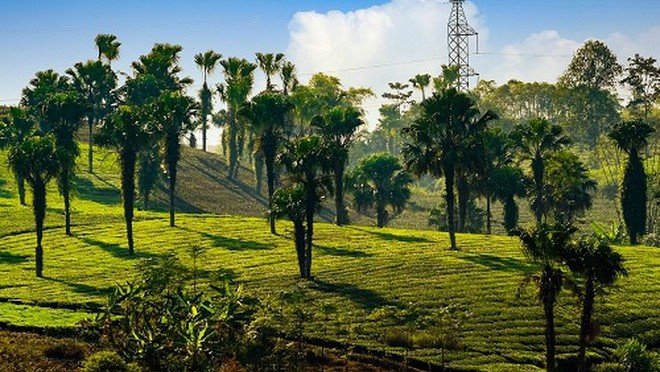
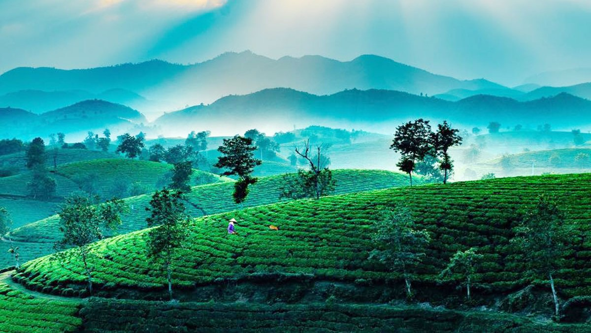
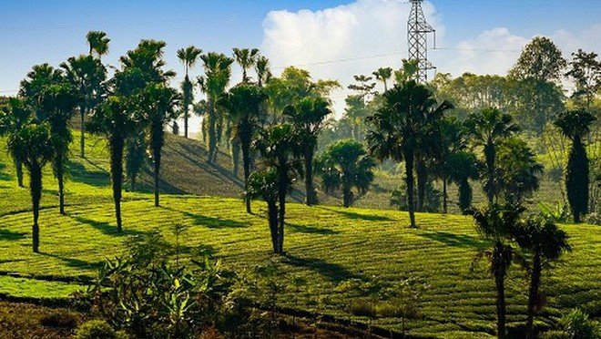

- 1. Đền Hùng
- 2. Đền Mẫu Âu Cơ
- 3. Vườn Quốc Gia Xuân Sơn
Tóm tắt ngắn
Đền Hùng
Ngày 6/12/2012, UNESCO công nhận "Tín ngưỡng thờ cúng Hùng Vương" ở Phú Thọ là di sản văn hóa phi vật thể đại diện của nhân loại. Đây là lần đầu tiên một di sản văn hóa của Việt Nam được vinh danh ở loại hình tín ngưỡng.Tín ngưỡng thờ cúng Hùng Vương ở Phú Thọ” là phong tục có từ lâu đời và đã trở thành nét đẹp văn hóa truyền thống tiêu biểu, thể hiện chữ hiếu, lòng biết ơn và triết lý “Con người có tổ, có tông”. Trải qua nhiều biến cố thăng trầm của lịch sử dân tộc, nhưng tín ngưỡng thờ cúng Hùng Vương chiếm vị trí thiêng liêng trong đời sống tinh thần của người Việt, có sức lan tỏa rộng khắp trong mỗi gia đình, trong cộng đồng xã hội và trở thành điểm hội tụ tinh thần đại đoàn kết toàn dân tộc. Theo truyền thuyết, Lạc Long Quân lấy nàng Âu Cơ rồi sinh ra một bọc trăm trứng, nở thành trăm người con trai. Sau đó, năm mươi người con theo mẹ lên núi, năm mươi người theo cha xuống biển lập nghiệp. Người con cả theo mẹ lên vùng đất Phong Châu (nay là Phú Thọ) lập ra nước Văn Lang và được tôn làm Vua Hùng. Văn Lang là Nhà nước đầu tiên trong lịch sử của người Việt, được cai trị bởi 18 đời vua. Các Vua Hùng đã dạy dân trồng lúa nước và chọn núi Nghĩa Lĩnh, ngọn núi cao nhất vùng để thực hiện những nghi lễ theo tín ngưỡng của cư dân nông nghiệp như thờ thần lúa, thần mặt trời để cầu mưa thuận gió hòa, mùa màng tốt tươi, vạn vật sinh sôi, nảy nở. Để ghi nhớ công lao to lớn của các Vua Hùng, nhân dân đã lập đền thờ tưởng niệm mà trung tâm là núi Nghĩa Lĩnh và lấy ngày 10 tháng 3 âm lịch hàng năm là ngày giỗ Tổ. Cộng đồng người Việt nhận rõ sự thờ phụng Hùng Vương là Di sản văn hóa của mình cần được gìn giữ, trao truyền cho các thế hệ sau. Có thể coi đây là đức tin tín ngưỡng thuần Việt đã vượt qua mọi thời đại để trở thành biểu tượng cho khát vọng trường tồn, độc lập, tự chủ lâu dài và ước mơ về sự phồn vinh của Quốc gia dân tộc. Ngày nay, Tín ngưỡng thờ cúng Hùng Vương đã đạt đỉnh điểm của sự thăng hoa để trở thành ngày hội non sông, ngày hội của toàn dân. Khẳng định vị thế vững chắc trong đời sống xã hội đương đại.

Đền Mẫu Âu Cơ
Hiếm có một dân tộc nào trên thế giới có tục thờ Quốc Mẫu độc đáo như ở Việt Nam. Tục thờ Quốc Mẫu không chỉ phản ánh nét sinh hoạt, văn hóa tín ngưỡng của dân gian mà còn cho thấy sự tri ân và tấm lòng tôn trọng đạo hiếu đối với tổ tiên của người việt. Phú Thọ là nơi khởi thủy của mỹ tục thờ mẫu Âu Cơ, là nơi tương truyền rằng mẹ Âu Cơ cùng 49 người con chọn dừng chân khai khẩn đất hoang, dạy dân cày cấy. Đền Mẫu Âu Cơnay thuộc xã Hiền Lương, huyện Hạ Hòa, tỉnh Phú Thọlà một công trình lịch sử văn hoá đặc biệt, là biểu tượng của tinh thần yêu nước và truyền thống đại đoàn kết dân tộc.Ngôi đền nằm ẩn dưới gốc đa cổ thụ phủ tán xum xuê, mặt quay về hướng chính nam, bên tả có giếng Loan, bên hữu có giếng Phượng, phía trước có núi Giác đẹp như một án thư, sau lưng sông Hồng uốn khúc như rồng thiêng bao bọc. Tuy không đồ sộ nhưng Đền Mẫu Âu Cơ Phú Thọ có giá trị cao về mặt nghệ thuật kiến trúc. Đền Mẫu Âu Cơ gắn với Tín ngưỡng thờ Mẫu Âu Cơ đã trở thành một nét đẹp trong tinh hoa văn hóa của người Việt.Hình tượng mẹ Âu Cơ sinh ra con Lạc cháu Hồng nước Việt trong một bọc trăm trứng đã trở thành hình tượng bất hủ sống mãi trong tư tưởng tình cảm và tâm trí của các thế hệ người Việt Nam. Hàng năm, không chỉ người dân trong vùng mà cả du khách thập phương từ nhiều nơi khác cùng hội tụ về đây vui đón Lễ hội Đền mẫu Âu Cơ diễn ra vào ngày 7 tháng Giêng là ngày “Tiên giáng”.Trong các ngày diễn ra lễ hội, trước sân đền và tại đình làng còn có nhiều trò chơi dân gian như: đu tiên, cướp cờ, đánh phết, hát ghẹo, hát xoan... thu hút sự tham gia của người dân địa phương lẫn du khách hiếu kỳ.

Vườn quốc gia Xuân Sơn
Được định hướng là một trong những khu du lịch trọng điểm của vùng Đất Tổ. Đảo Ngọc Xanh(thuộc địa phận Xã La Phù, huyện Thanh Thủy, tỉnh Phú Thọ) vốn là một bãi bồi nổi giữa sông Hồng, bên dưới là một mạch ngầm nước khoáng nóng có trữ lượng lớn nhất cả nướcđã được xây dựng như một kỳ quan mới để mang đến những trải nghiệm thú vị cho du khách khi khám phá vùng đất thiên thời, địa lợi, nhân hòa. Đảo Ngọc Xanh với những điều kiện thuận lợi nhất của thiên nhiên và khả năng sáng tạo vô tận của con người được ví giống như một hòn đảo ngọc xanh biếc giữa lòng thành phố.